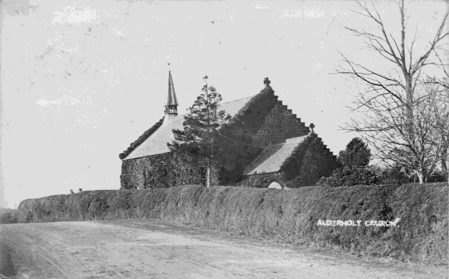
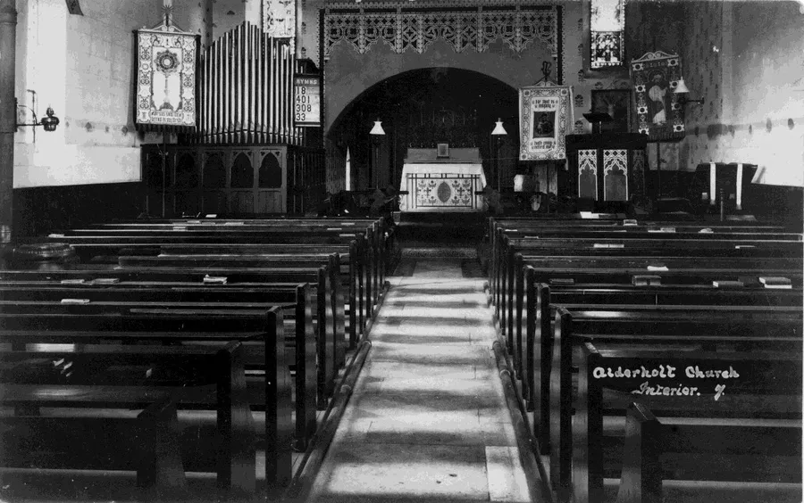
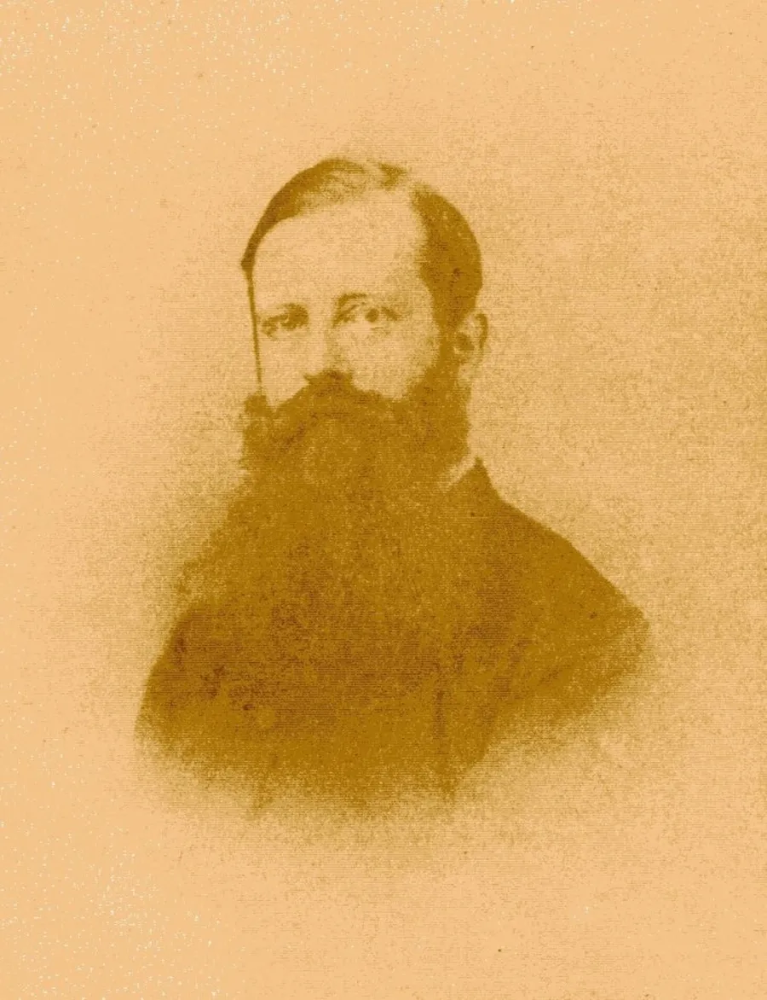
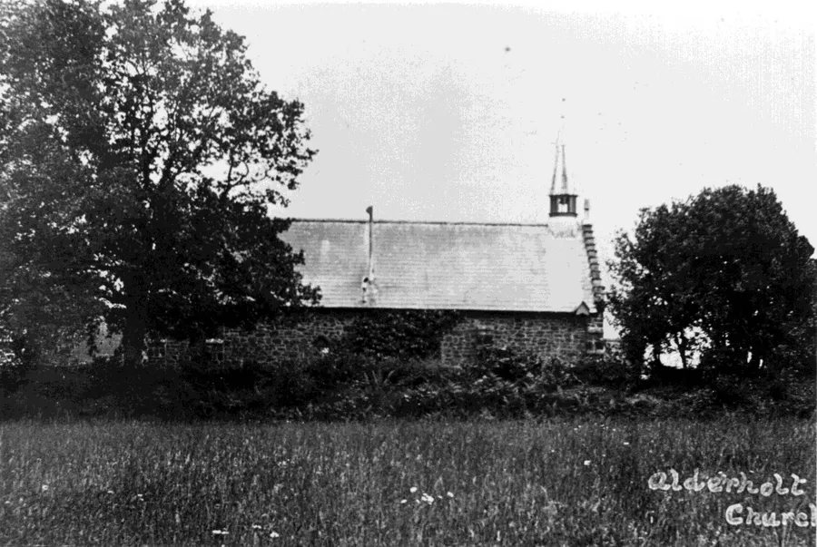
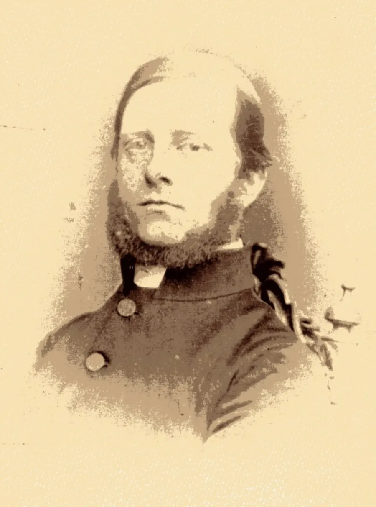

The original church dedicated to St. Clement Bishop and Martyr was a medieval building in the vicinity of Home Farm. It was a chapel of ease in the parish of Cranborne but by the late 18th century had ceased to exist.
The Foundation Stone of the new building was laid in 1841 and sometimes known as Daggons Church. The Church was built using locally quarried dark brown sandstone. Construction was commenced at the expense of the 2nd Marquis of Salisbury. He gave the land for the Church and it was built in the geographical centre of the proposed parish of Alderholt.
A year or two later the Church was almost complete but when a snag arose building was suspended. Who was going to pay for the vicar?

An old picture of the church before the new nave was built
The building had been originally intended as a chapel of ease under the parish of Cranborne. It was the vicar of Cranborne Mr. Carnegie’s opinion that the chapel would be ready for dedication in early 1844.
Eventually the Ecclesiastical Commissioners agreed to make a grant of £50 per annum to the new benefice of Alderholt but this was not until late 1848. When Lord Salisbury received this information from the bishop he gave orders for the immediate completion of the Church.
The church was consecrated on 2nd June 1849 and dedicated to St. James the Greater, Apostle and Martyr and St. Clement. Dr. Edward Dennison the Bishop of Salisbury performed the ceremony. St. Clement was dropped from the patronage in 1893.

The interior of the church before the new nave was added
The way in which the village celebrated the opening of the Church throws a strong light on the manners of the time. After the service Squire Key entertained the clergy and gentry at the park.
A rural festival then took place on the green with a barrel of beer and many cake stands being provided to help the dancing. The beer was home brewed in a local beer shop. The barrel had two taps with one at each end. The company believing there was two barrels set back-to-back confidently paid one penny more for the same measure from what was supposed to be the superior quality tap. This tale has come down orally to a third generation and is still enjoyed as an amusing joke.
It is remembered that Nimrod Stainer and Eliza Amey were the first couple to lead off.
The vicar of Cranborne held a service every Sunday afternoon until the Rev. Alfred James Lowth took up his appointment later that year.
On November 14th 1849 the Church Authorities decided that the former hamlets of Alderholt, Daggons, Crendell and Cripplestyle in the Cranborne Parish should become a separate district for ecclesiastical purposes.

Rev. Alfred James (Dandy) Lowth 1817–1907. Vicar 1850–1853
The Old Vicarage near Home Farm also known as The Rectory served as the Parish Vicarage for a time before one was built nearer St. James Church.
Rev. Richard H. E. Wix and his wife Catherine were living in “The Rectory” in 1861C. Rev. William Tapp and his wife Louise were living there in 1871C.
Repairs and decorations were carried out to the church in 1885. The present bell was purchased in 1887 to celebrate Queen Victoria’s Jubilee year though it was not hung in its present position until 1889.
There was a balcony at the West End of the Church with steps leading up to it from where the hymnbook stand is situated. The choir of 25 men and boys sang from the balcony while the new chancel was being built. This balcony was removed in 1960.
The east wall formed the end of the church. It did not have a window and was in line with the present pulpit. The organ which replaced an earlier barrel organ with its four tunes stood against the wall next to the present vestry door.
The font is distinctly of Gothic revival character and probably not contemporary with the 1849 church. A small circular font bowl dug up in the vicarage garden some years ago may have been its predecessor.
For those who are interested, here is a description of the building. F. P. Pitfield says in Dorset Parish Churches,
“The original building of 1849 consisted of nave, chancel and west porch and from the 1:2500 Ordnance map of 1901 its approximate size and shape can be deduced. This shows the chancel to have been only about half the size of its present counterpart and that the nave extended eastwards only as far as a buttress which still remains on the south side, some 2 metres short of the present south-east corner buttress.
"Internally the eastern jamb of a large but shallow rectangular wall recess marks this point. A similar recess exists in the same relative position internally on the north side but the opening to the organ chamber now mostly pierces it. It is difficult to imagine what purpose these recesses might have originally served. They appear to have had no significance externally where the wall remains flush on the undisturbed south side and as they do not extend to the floor, they seem unlikely to have been any sort of provision for future transseptal extensions.

St. James Church looking from the north
“The original building is pleasantly unpretentious in a rural vernacular style surprising for so late a date. The walls are entirely of the local brown heath-stone with simple two-stage weathered buttresses all in the same material. The four side windows of the nave are single lights with triangular heads and simple chamfered mouldings, whilst the west window, at high level above the porch, is also triangular headed but of three lights with a transom.
“An unusual feature is the stepped motif to the west gables of both the nave and porch which imparts an almost Scottish flavour to the building. The twelve steps on each side of the nave gable are said to be symbolic of the twelve apostles. There are plain cross finials at the apexes of the gables and a pierced timber bell lantern on the nave ridge at the west end which is roofed by a small spire covered with slates and lead hips.
The nave roof is divided into four bays by king post trusses with roof-boarded soffits between exposed common rafters..”

Rev. Richard Hooker Edward Wix (1832–1893). Vicar 1857–1867